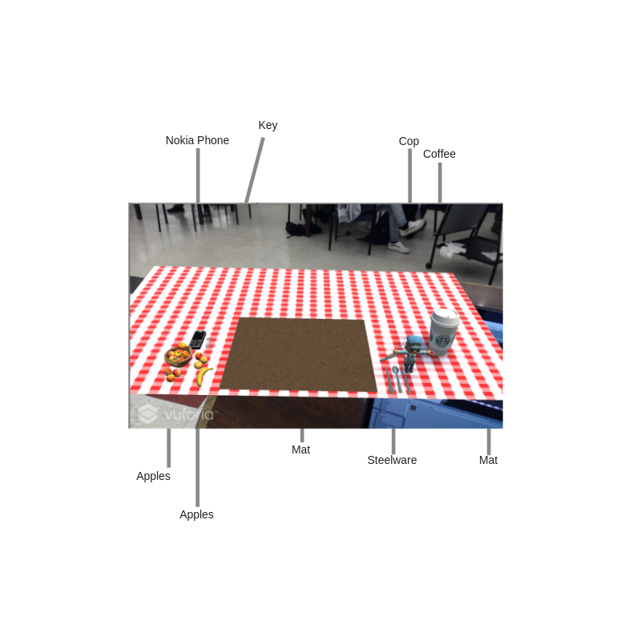
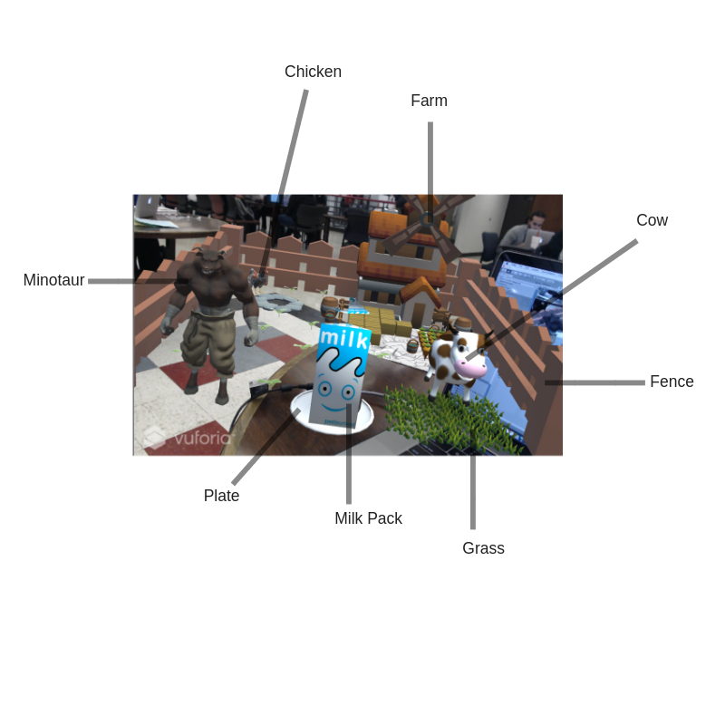

AR BREAKFAST
CS 491 Project 1
Description
AR BREAKFAST has been created as a part of coursework for CS 491. This project demonstrates the possible scenario at the breakfast table in future. In the future, when people will be wearing AR glasses, they might get everything in an augmented manner. There are 3 scenes created for this application using different types of image targets.
The first scene is the Placemat scene. The cop animates by taking a route along the edges of the mat and there is a bird song constantly being played in the background.

Scene 2 is bult upon a multi target box which represents a box of cereal. The cereal box shows a theme of a corn farm with birds chirping around
Scene 3 is bult upon a cylindrical target which represents a can of milk. The scence demonstrates a poultry farm with spokesperson being a Minotaur who is constantly roaring.
There is also an Image Target which represents a Magazine. The magazine is placed in a landscape orientation. It has been made out of 2 planes(left and right) with VirtualButtons to turn the pages. The buttons change the material of the plane at Runtime.